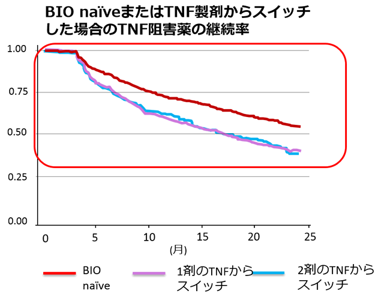

TNF阻害薬同士のスイッチの継続率（CORRONA Registry）
CORRONA registry（海外データ）n=2,242
USのCORRONA registryでTNF阻害薬の継続率が比較された。

TNF阻害薬から別のTNF阻害薬へスイッチした際の継続率はBIO naïveに比べて低かった
CORRONA registry（海外データ）n=2,242
USのCORRONA registryでTNF阻害薬の継続率が比較された。
TNF阻害薬から別のTNF阻害薬へスイッチした際の継続率はBIO naïveに比べて低かった